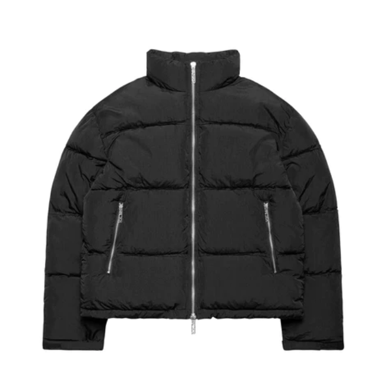
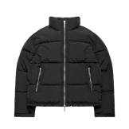
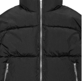
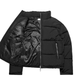
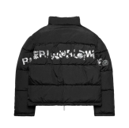

Jacket 1
$190
DESCRIPTION
SIZE HELP
SHIPPING
RETURNS
Puffer jacket made from crinkle nylon fabric with a distressed raw cut finish on the seams. The back is embellished with a silver-tone injection-molded logo in distressed lettering. Stand collar. Thick synthetic filling for warmth and comfort. Boxy fit. Windproof and waterproof. Two-way separating front zipper.